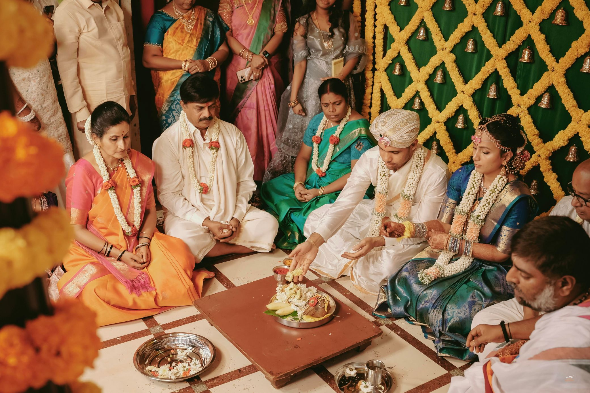

Vratham & Ganapathi Pooja
The celebrations begin with prayers seeking divine grace, clarity and an obstacle-free journey for the couple and their families.
Beautifully captured by EMC² Studios, Bengaluru — preserving every emotion, tradition, and timeless moment with artistry and grace.
Thejaswini and Chandrasekar began a new chapter surrounded by family, blessings and the timeless beauty of South Indian Hindu wedding traditions.
Every ritual carried a meaning: gratitude to those who came before, joy in the present moment, and a promise to walk into the future with mutual respect and unwavering companionship.
May auspiciousness, harmony and abundance accompany them through every season of life.
Sacred rituals
The celebrations begin with prayers seeking divine grace, clarity and an obstacle-free journey for the couple and their families.
A joyful, symbolic interlude in which the groom is lovingly persuaded to embrace the responsibilities and companionship of married life.
The exchange of garlands marks mutual acceptance, celebrated with laughter as family members lift the couple in playful affection.
The bride's family entrusts her hand to the groom, blessing the couple as they begin a partnership founded on care, dignity and trust.
At the auspicious moment, the sacred thread is tied—an enduring symbol of commitment, protection and a shared life.
Seven steps around the sacred fire become seven vows: nourishment, strength, prosperity, happiness, family, harmony and lifelong friendship.

Not simply beside one another, but always for one another.
Selected memories
Replace the sample placeholders with your nine additional photographs while retaining the filenames shown.
A blessing for their life together
May your home be filled with kindness.
May your conversations be honest.
May your dreams make room for one another.
And may every tomorrow deepen the love you celebrate today.
With love and blessings from family and friends